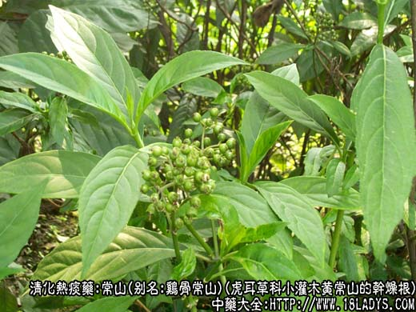
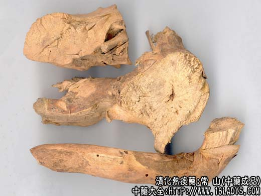
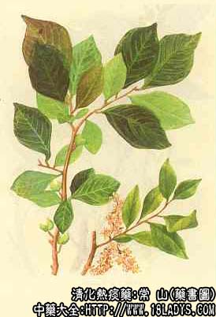

常山为较常用中药，《神农本草经》列为下品。商品来源复杂，全国大部分地区习惯认为鸡骨常山为正品。
别名：鸡骨常山、黄常山。
来源：为虎耳草科植物落叶小灌木黄常山的干燥根。野生或栽培。
产地：主产于四川、贵州、湖南、湖北等省。
性状鉴别：根圆柱形，弯曲不直，直径约会0.3～2厘米，多断切为长10～15厘米的节段，栓皮较薄均已脱落。表面黄色，光滑，显细纵纹。头大尾细，下部多有分歧，质坚硬，形如鸡骨，不易折断，折断时有粉尘飞出。断面黄白色，有放射状纹理。气微，味苦，久嚼令人作呕。
以质坚实，条均匀光滑，表面及断面黄色者为佳。
主要成分：含常山硷甲、乙、丙，此外还含有常山次硷和伞花内酯等。
功效与作用：常山是治疗疟疾的要药，能化痰抗疟、清热利水。动物实验证明有下列作用：
1、抗疟。常山对实验性疟疾感染，有显著疗效。有效成分为常山硷。常山硷乙、丙的作用强度约为奎宁的89～152倍，近年也证明常山硷乙对恶性疟疾和间日疟，急性发作时有较好的疗效，能迅速控制症状，血中疟原虫阴转，但不能根治。其主要副作用为呕吐，胃肠道外给药也会引起呕吐。
2、催吐。作用较强大，其原理主要是刺激胃肠道引起的反射作用。
3、退热。动物实验证明，常山有明显确定的退热作用。此作用可能与中枢神经系统抑制有关。
4、抗病毒。体外实验证明，常山对甲型流行感冒病毒PR8有抑制作用，对感染流感的小鼠也有效果。
5、抗阿米巴。体外和动物实验、治疗，均证明对阿米巴原虫有一定抑制作用。
6、其他作用。运动实验证明，常山硷甲、乙、丙静脉注射于麻醉狗，能引起血压下降；对有孕子宫多呈兴奋作用，体外试验对艾氏腹水癌细胞有一定的杀灭作用。
炮制：切片、生用。
性味：辛、苦、寒、有小毒。
归经：入肝、肺经。
功能：吐痰、行水、截疟。
主治：新久疟，老痰积饮，欲吐不能，胸胁胀满等症。
临床应用：1、用于抗疟，为中医药治疟的要药，历代医家广泛应用常山治疗各种疟病。现代的实践认为，常山对治疗间日疟和三日疟有疗效，可作为主要控制症状的抗疟药使用，常配乌梅、川连、槟榔、草果、法夏、北杏、黄柏等，代表方为常山饮。但因其有较严重毒性，且在治疗量下也有催吐等剧烈副作用，因此，临床应用的价值大受限制、要消除其副作用，有待进一步研究，加以解决。
2、引吐积痰、毒物，以常山配伍甘草，温服取吐，治胸中痰饮、食物中毒、宿食停留于胃者，取其能涌吐出老痰、积痰和宿食，但是注意只在邪盛体壮的情况下才适用。
附1：1、常山的副作用：为服后呕吐，生用、重用则吐作用更加明显，因此，一般用酒制和炒过，或配入槟榔、草果、法半夏、乌梅等，能减少其副作用，如著名的“七宝饮”、“常山饮”即按此配伍，可减少恶心、呕吐等副作用；脾胃虚寒、胸闷气滞者，配藿香也能止呕。又其叶服后致吐，故煎药前应先剔除其叶；2、关于常山与甘草同用问题，有认为常山配甘草必呕，但历代治疟代表方剂，许多都用常山与甘草相配，看来只要同时再适当配伍其他药以防呕吐，常山与甘草的配伍并不禁忌。
用量：4.5～9g（抗疟），3.4～4.5g（祛痰）。
处方举例：常山饮（《局方》）：常山9g、贝母9g、草果4.5g、槟榔12g、乌梅6g、生姜9g、大枣12g，水煎服。
七宝饮：常山9g、槟榔9g、鳖甲9g、乌梅3个、红枣3g个，甘草9g、生姜3g片，水煎服。
附2：蜀漆为常山苗。味辛、性平、有毒。功用与常山同，但催吐作用较常山更强，现代更少用。
注：除上述常山外还有以下10种：
1、山常山。产于中南华东南北各地，为小蘖嚎猪刺，三颗针，庐山小蘖等多种植物的干燥根，根弯曲不直，一般长15～30厘米，直径1.5～3厘米，多带淡褐色粗皮，剥落粗皮，内鲜黄色，质坚硬，不易折断。断面中心有黄白色髓心。气微味苦。均含小蘖碱可作提取黄连素的原料。天津市作常山使用。
2、滇鸡骨常山。主产云南，为夹竹桃科植物鸡骨常山的干燥根。治发热头痛，身起泡、红肿及高血压。叶有小毒常作消炎、止血、接骨止痛药。
3、滇常山。产于四川、云南等地，为马鞭草科植物滇常山的干燥根，四川、云南民间用于治头眩晕。
4、臭常山。产于贵州、云南等地，为芸香科植物日本常山的干燥根，根、茎及叶贵州民间均用，解热镇咳外用治肿毒。
5、白常山。产于四川等地，为茜草科玉叶金花属植物白常山（展枝玉叶金布，鹅儿花）的干燥根。四川民间用于散寒泻火，治疟疾、寒热往来。根极似鸡骨常山，但断面有白心可以区别。
6、海州常山。产于安徽、江苏等省，为马鞭草科植物臭梧桐的干燥根。根、茎、叶、花均可疗疾。功能祛风湿、清热、利尿止痛、平肝降压，亦可治疟（茎叶名臭梧桐，为制豨桐丸、片的主要原料）。
7、土常山。产于浙江，为虎耳草科植物（甜茶）的干燥根，与鸡骨常山相似，淡黄色可涤痰结，散肿毒，治瘿瘤。民间代鸡骨常山，作截疟药，能催吐。此外另有同科伞形绣球，腊莲绣球等的根亦作吐常山使用。
8、广西南宁以山矾科华山矾的干燥根，作吐常山用，治疗疟疾。
9、湖南通道及会同县，以马鞭草科的黄荆和牡荆的根、作土常山用。
10、河南、河北、山西、山东、陕西部分地区以薯蓣科穿山龙的根，作常山用，称为常山、草常山或土常山。
综上所述，可见常山植物来源不一，品种混乱。其疗效亦不尽相同，应注意区分。